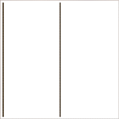
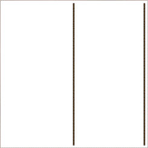
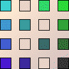
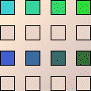
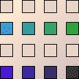
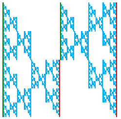

|
 |  |
|  |  |  |
|
 |
| The reason is that the picture doesn't contain these lines: | ||||||
| ||||||
| The tables reveal this as well. | ||||||
| The vertical line in the middle of the picture is made from both the left and right side vertical lines. | ||||||
|
Return to combinations of lines, 5.